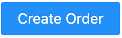

Users can start a new order by clicking on the  button located on the top-right of the interface.
Click on “Submit” after setting the order name and provide corresponding opportunity ID from Salesforce, the order list page will jump to basic settings page for users to provide more detailed information. The settings page can also be opened by clicking in the action column of each order.
Users can view and edit details of the order by clicking on button in the action column. The order list page will jump to basic settings once a new order is created for users to provide more information about the order.
By clicking Add AOI button on the top right corner, users can upload the AOI file from local machine or through S3 buckets. Once uploaded, the AOI will be listed under AOI Data section of the page.
Order’s imagery datasets are listed in this section. By clicking on the Add Imagery button in the Imagery Data section, users can add imagery data to the order by providing the following information:
Imagery Type:
Single View: single view imagery for 2D feature extraction
Multi View: multi-view imagery for 3D production
Location:
Local Drive: upload by drag-and-drop or navigate to the location of the file on local machine
Cloud Service: S3 bucket that store the imagery data or through partnered imagery provider
Own S3: customers own S3 path with corresponding access key and secret access key
Ecopia S3: system generated Ecopia S3 bucket paired with access key and secret access key for users to upload imagery datasets to designated S3 buckets
Imagery Provider: download imagery through imagery provider by providing resolution (mandatory) and vintage (not mandatory).
After the information is provided, click on Submit. The newly create imagery dataset will be listed in Imagery Data section. In the meantime, system will process the imagery automatically and run coverage check against the AOI.
After the users adjusted the content in the S3 path to provide more coverage, they can choose to Validate Again to see if the adjusted content fully covers the AOI;
Users can also choose to Ignore Missing Area if the missing area is not crucial to the project.
A list of standard product packages are listed on top of the catetitles. Users can select one or multiple and corresponding catetiles will be automatically selected in the catetitle list below.
Users can add catetitles to the extraction orders by clicking on the check box next to them.
Catetitles are categorized into 4 different Categories:
Raster: include DSM and orthomosaic data generated through production pipeline
2D Landcover: includes building, road, manmade and natural landcover features; height attribute can be selected to construct 3D landcover data
Advanced Transportation: includes different types of transportation related centerlines, polygons, points and other transportation features that can be used for guiding and navigation
Non-Standard: features that are not derived through modeling. These features have been categorized into centerlines, road lines, polygons, and signs.
users can also define new categories by clicking on + Add Category button. In the pop-up window, category name, geometry tyoe, definition, image example, and annotate rules are required to create this new category.
Users can select the category in general or select second-tier categories to further differentiate the features.
To help Ecopia team better understand the extraction requirements, users can attach supporting document in the Attached Document for Extraction Request section.
Click on “Save & Continue” to apply the changes and continue to Delivery Settings.
Once the AOI information and extraction settings are provided through previous pages, users can obtain quote information and place order to put the order into production.
User can obtain quote information by clicking on the Quote button. At this stage, the system is calculating the quote for the order based on the extraction settings and size of the AOI. The process will normally take a few minutes to complete.
Once the quote is calculated, users can place order by clicking on the Place Order. After the order is placed, the production team will receive notification and the production process will be triggered.
Email notification will be sent to order owner once the vector result is delivered. By clicking on the button, users can view the deliveries and their path on the platform.
Platform Link: users can navigate to the file’s platform location by clicking on the link. Users can also choose to click on the Download Result button to download the file to local machine
Raster WMTS URL: URL to raster dataset in WMTS format
Raster WMTS Expiration: date and time that the raster WMTS will be expired
Vector WMTS URL: URL to vector results in WMTS format
Note
If a new vector result has been delivered, the delivery result window will display the corresponding information for the latest result.
Users can upload their offline comment in zipped shapefile format for production team to review and fix accordingly. Along with the zipped shapefile that contains comments, users can also provide writing description and imagery example for production team to better understand the issues.